18xx introduction
18xx refers to a family of board games that focus on investing in, and operating, train companies. Players aim to end the game with the most wealth, and this can be achieved in a number of different ways. Players can buy stock in companies, and the player who owns the most shares in a company is responsible for operating the company. Companies lay track by placing hexagonal tiles, and run trains along the track network to earn revenue. Dividends may then be paid to all players who own shares in the company. Some games emphasise manipulating the stock market, while other games place a greater emphasis on running profitable companies.
Rusty Train
Rusty Train is a graphical user interface that uses the navig18xx crate to
allow users to track the state of 18xx game maps, and to calculate the optimal
revenue that each company can earn.
See the user guide for details.
navig18xx
The navig18xx crate (”navigating ex ex”) allows players to identify the
train routes that will earn the most revenue for a company.
It also provides lower-level building blocks for defining tiles and creating
game maps.
See the developer guide for details.
An example tile
This image was produced by the following code:
use navig18xx::prelude::*;
use std::path::Path;
mod output;
fn main() {
// Specify where to save the output images.
let output_dir: &Path = output::Dir::BookRoot.into();
let hex_max_diameter = 125.0;
let hex = Hex::new(hex_max_diameter);
let tile_x5 = Tile::new(
HexColour::Brown,
"X5",
vec![
Track::straight(HexFace::Top).with_span(0.0, 0.1),
Track::straight(HexFace::Top)
.with_span(0.1, 1.0)
.with_clip(0.3625, 0.75),
Track::mid(HexFace::UpperLeft),
Track::mid(HexFace::LowerLeft),
Track::mid(HexFace::LowerRight),
Track::mid(HexFace::UpperRight),
],
vec![
City::single_at_face(70, &HexFace::Top),
City::double(70).in_dir(Direction::S, 0.1),
],
&hex,
)
.label(Label::City("M".to_string()), HexCorner::BottomLeft)
.label(Label::Revenue(0), HexCorner::Left.to_centre(0.1));
tile_x5
.save_svg(&hex, output_dir.join("tile_x5.svg"))
.expect("Could not save tile X5 as an SVG");
}
An example route
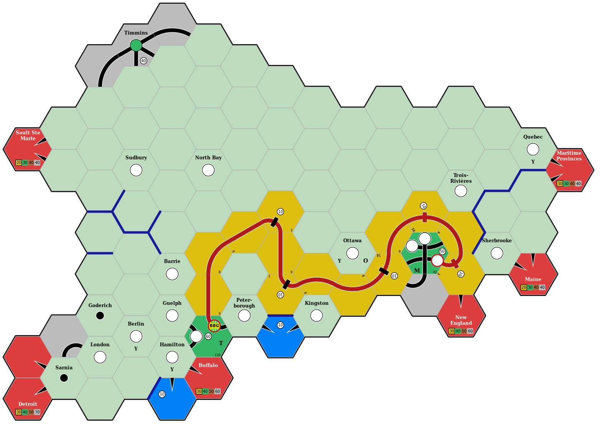
Motivation
As someone who has enjoyed playing board games since 2010 or so, I began my own collection in 2016 when I felt it likely that I wouldn’t relocate internationally in the near future. At that point I wasn’t aware of 18xx.
But as I continued to explore board games, I eventually came across 1830 and watched the GameNight! team play 1830. At this point I became interested, and eventually stumbled across the 18Chesapeake Kickstarter campaign. I ultimately decided not to back 18Chesapeake, and then I saw the 1861/67 Kickstarter campaign. I ummed and ahhed, and finally decided to back it based on a combination of (a) Josh’s enthusiasm for making 18xx more accessible to newcomers; (b) the production values; (c) the settings of Russia and Canada; and (d) the operational focus.
Then I watched the Bankruptcy Club play 1867, and realised that it can be extremely difficult to figure out the optimal routes for a company’s trains. Indeed, in the later stages of this game when there are many track connections and each company owns multiple trains that can run long routes, it can take a long time for a player to explore all of their options. Identifying the optimal route for a single train can be difficult, and combining multiple train routes that may compete for access to high-revenue cities makes this even more complicated.
When there can be more than 50,000 different routes, and more than 1 billion unique pairs of routes, how can a player be confident that they have identified the highest-revenue routes?
This is an interesting path-finding problem, and one for which there are some implementations (18xx@groups.io, Stack Exchange, Reddit).
It was a problem space that I thought would be fun to explore.
This in turn made me think of my initial explorations of the Rust programming language, and how it combines a strong type system and type inference with zero-overhead abstractions.
So I began to play around and gradually navig18xx took form.
In its current state, it can identify the optimal routes for each company in the final round of the Bankruptcy Club’s 1867 game (see the figures shown below).
However, it can currently take around 2 minutes for complex situations such as companies that own 5+5E trains, which have no limit on their path length.
The 1867 map for the final operating round
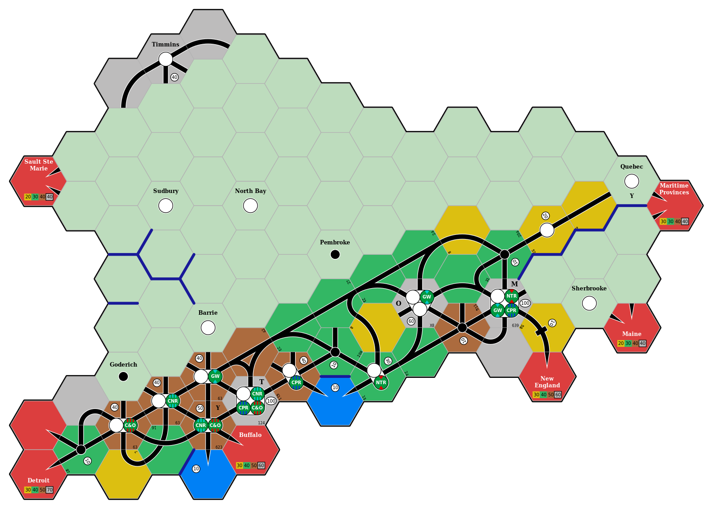
Optimal routes for the Great Western Railway
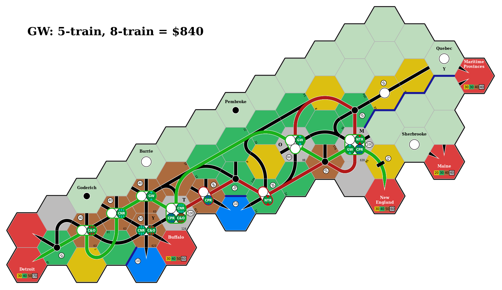
Optimal routes for the Chesapeake and Ohio Railway

Optimal routes for the Canadian Northern Railway
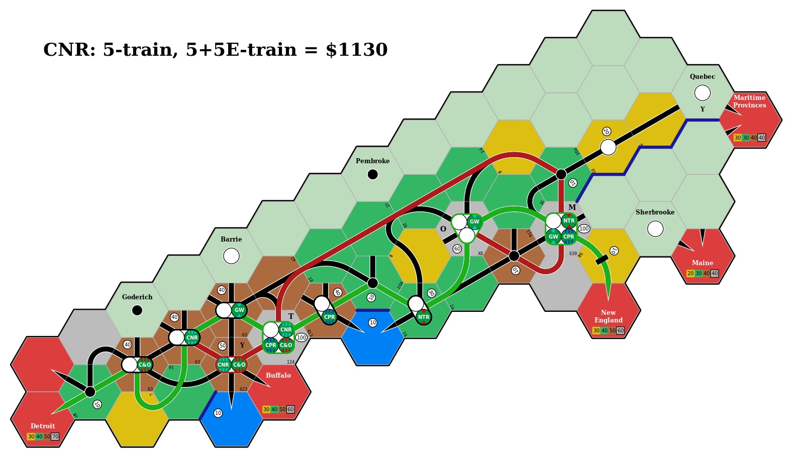
The problem
What combination of train routes will earn the most revenue for a company? And why is this a difficult question to answer?
-
The number of valid train routes can be extremely large.
- As the maximum route length grows (e.g., running a 3-train instead of a 2-train) the number of valid train routes can grow exponentially.
-
A valid train route must pass through (at least) one of the company’s station markers.
-
Train routes do not necessarily start or end at a station marker.
-
Train routes can be constructed by first generating all routes that start at each station marker, and then joining pairs of routes that start or end at the same station marker.
-
Note that this approach will generate duplicate routes when a single route can reach or pass through multiple station markers (but this duplication can be avoided by defining an ordering for the station markers).
-
-
When a company owns multiple trains, all valid combinations of train routes must be considered.
- The highest-earning route for each train will typically share track segments, and cannot be operated at the same time. So this is not as simple as finding the highest-earning route for each train.
-
The number of route combinations can be extremely large.
- Consider a company that has 50,000 valid train routes. If the company owns 2 trains, there are 1,249,975,000 route combinations. If the company owns 3 trains, there are 20,832,083,350,000 routes combinations.
-
For each route combination, we need to determine whether it is valid (i.e., the routes can be operated without any conflicts). This is currently the most time-consuming step.
-
For each valid route combination, the earned revenue may depend on how the company’s trains are allocated to the routes.
-
For each valid route combination, there may be additional bonus revenue.
-
The company might own a private company that confers bonus revenue.
-
The game rules might confer bonus revenue to routes that connect two specific locations.
-
-
Each step can be divided into a number of independent tasks and run in parallel, although this only provides a modest performance benefit (a linear reduction in exponential growth).
See the optimal routes chapter of the Developer guide for further details.
User guide
This guide explains how to use the “Rusty Train” UI to track the state of 18xx game maps, and to calculate the optimal revenue that each company can earn.
cargo run
Modal interface
The current mode is indicated by the border colour of the active hex. The different modes are:
- Default: select and rotate tiles, switch to other modes.
- Replace tile: place and upgrade tiles.
- Edit tokens: place and remove tokens from a tile.
- Find routes: identify the optimal routes and revenue for a company.
There are also global keys that perform the same action in any of the above modes.
Global keys
These keys perform the same action in any mode.
| Key | Action |
|---|---|
q, Q | Quit |
s, S | Save a screenshot of the current map |
Ctrl+n, Ctrl+N | Start a new game |
Ctrl+o, Ctrl+O | Load a saved game from disk |
Ctrl+s, Ctrl+S | Save the current game to disk |
+ | Zoom in |
- | Zoom out |
Default mode
Use this mode to select a tile or hex space, and switch to other modes to place tiles, place tokens, and select optimal routes.
| Key | Action |
|---|---|
e, E | Switch to Replace tile mode, select any tile |
u, U | Switch to Replace tile mode, select an upgrade tile |
t, T | Switch to Edit tokens mode |
r, R | Switch to Find routes mode |
<Left> | Select the hex on the left of the current hex |
<Right> | Select the hex on the right of the current hex |
<Up> | Select the hex above the current hex |
<Down> | Select the hex below the current hex |
| Any mouse button | Select the hex under the cursor |
,, < | Rotate the current tile anti-clockwise |
., > | Rotate the current tile clockwise |
<Backspace> | Remove the current tile |
<Delete> | Remove the current tile |
p, P | Change the game phase |
Replace tile mode
Use this mode to place and upgrade tiles.
| Key | Action |
|---|---|
Esc | Return to Default mode, ignoring any edits |
Return | Return to Default mode, saving any edits |
o, O | Show the original tile, if any |
<Up> | Select the next available tile |
<Down> | Select the previous available tile |
,, < | Rotate the selected tile anti-clockwise |
., > | Rotate the selected tile clockwise |
Edit tokens mode
Use this mode to place and remove tokens from a tile.
| Key | Action |
|---|---|
Esc | Return to Default mode, ignoring any edits |
Return | Return to Default mode, saving any edits |
<Left> | Select the previous token on the active tile |
<Right> | Select the next token on the active tile |
<Up> | Replace the current token (if any) with the next available token |
<Down> | Replace the current token (if any) with the previous available token |
0 | Remove the current token |
<Delete> | Remove the current token |
<Backspace> | Remove the current token |
Find routes mode
Use this mode to select a company and find the optimal routes and revenue for this company.
The user will be prompted to select one of the companies that has placed tokens on the map. They will then be prompted to select the trains available to this company, and any relevant bonuses.
This will initiate the route-finding process; depending on the number of potential routes, this may take several minutes to complete.
The optimal routes will then be drawn on the map and the optimal revenue will be displayed. The user can cycle through the individual routes with the arrow keys.
| Key | Action |
|---|---|
Esc, Return | Return to Default mode |
<Left>, <Up> | Show the previous train route |
<Right>, <Down> | Show the next train route |
d, D | Display the dividend payments |
Example
Start Rusty Train with cargo run --release:
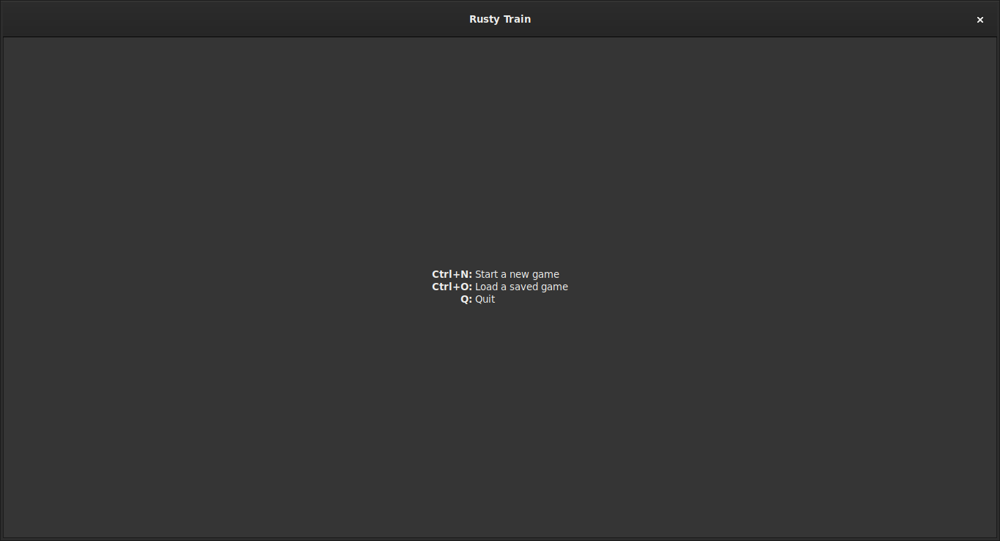
Load the 1867_bc example game, which is in ./examples/output/1867_bc.game, with Ctrl+O:
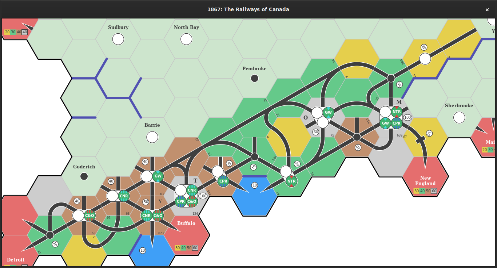
Press r to find the optimal routes for a company.
Select the Great Western Railway and click OK:
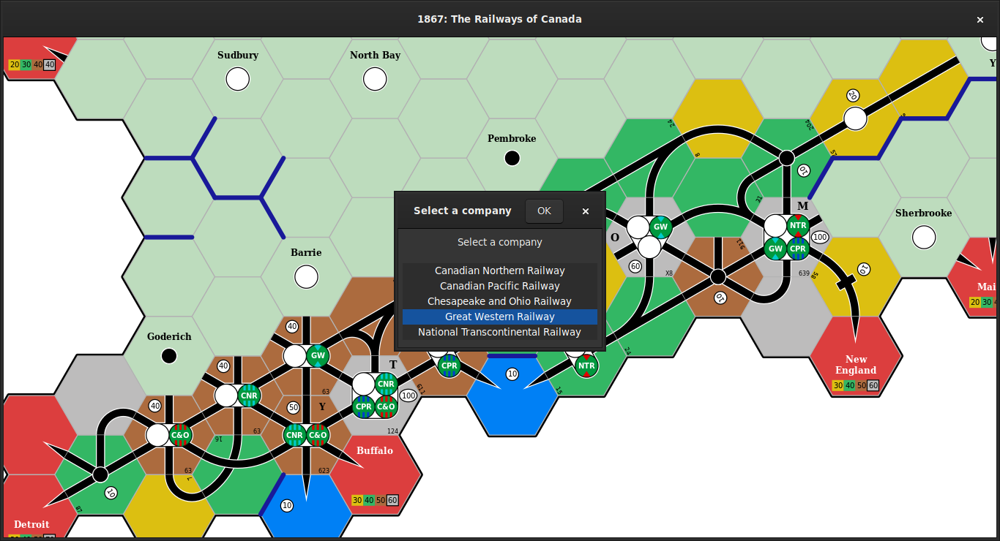
This company owns a 5-train and an 8-train, and does not receive any of the four bonuses listed on the right-hand side.
Enter these details and click OK:

The map is disabled and faded out while searching for the optimal routes:
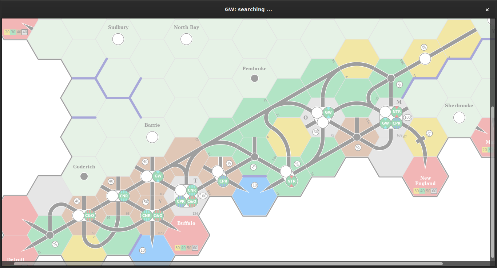
When the optimal routes are found, they will be drawn on the map (highlighted in green and in red) and the net revenue is shown in the window title:
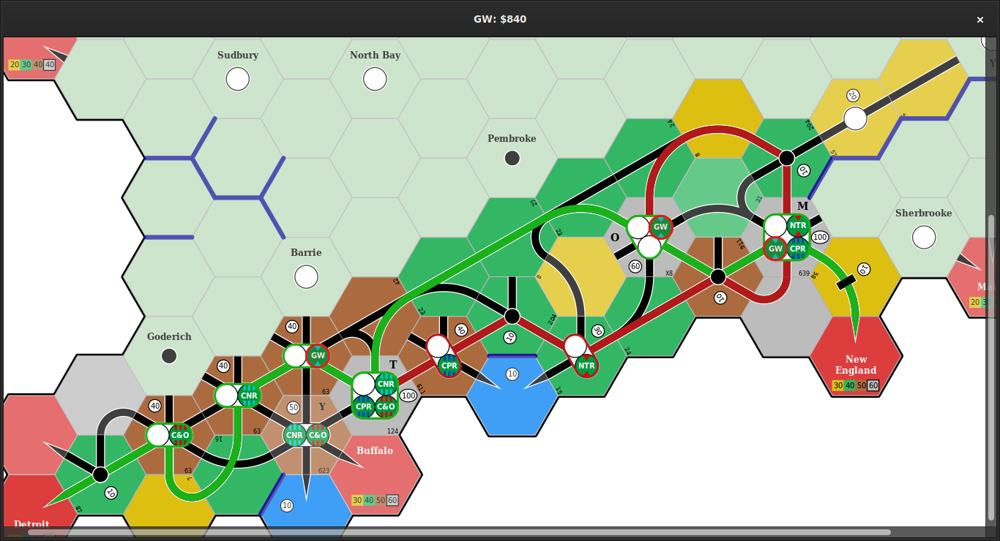
Use the arrow keys (<Left>, <Right>, <Up>, <Down>) to cycle through the individual routes; the train name and route revenue are shown in the window title:
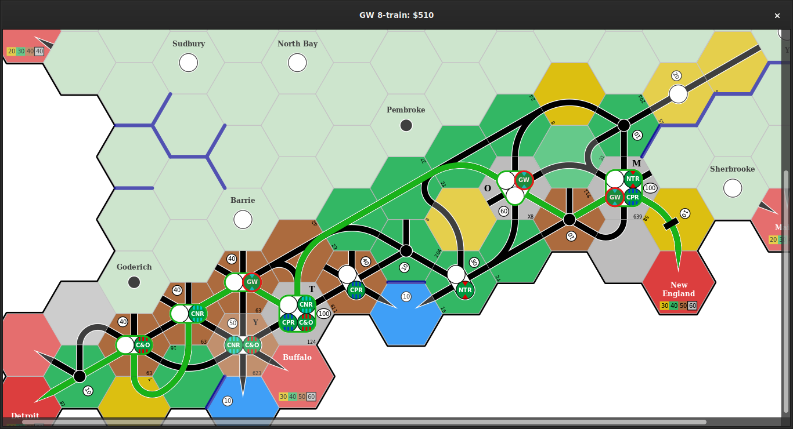
Press d to display the dividend payments:
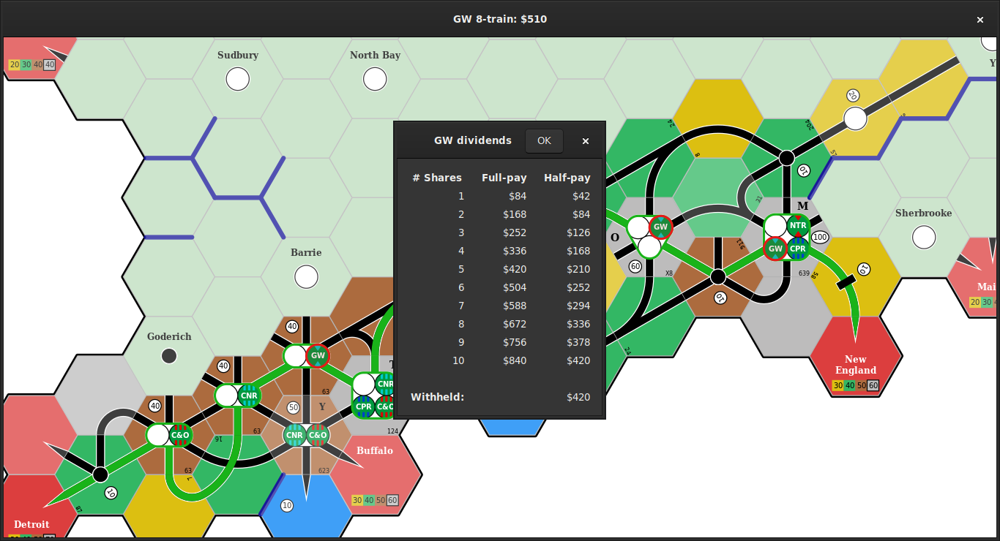
Press Esc or Return to return to the Default mode.
Developer guide
This documentation explains how the navig18xx crate is designed and
implemented.
Overview
TODO: provide a top-down overview of the project structure, working backwards from the goal of identifying optimal routes.
Crates
The navig18xx crate is a wrapper that groups together a number of sub-crates:
n18hexdefines the basic geometry of hexagonal tiles (coordinates, faces, corners, background colours).n18tiledefines the various elements that can appear on a tile (track segments, revenue centres, token spaces, labels) and constructs the track network for each tile.n18tokendefines the token types and manages the collection of available tokensn18cataloguedefines the range of available tiles, including both the tiles that a player may place during a game, but also the tiles that make up the initial map (such as cities and towns, preexisting track segments, and off-board locations).n18mapmanages the state of a game map, such as tile and token placement.n18iodefinesSerializeandDeserializeimplementations for the types defined by each of the above crates.n18routefinds the optimal set of routes that can be operated by a company’s trains for a given map state.n18gamedefines the elements that are required to describe a specific 18xx game implementation, and currently provides an (incomplete) implementation of 1867.n18brushdefines common drawing operations, such as drawing the map background, drawing each map hex, and highlighting train routes.n18uidefines a GTK user interface for creating and modifying 18xx map states, and calculating the optimal revenue for each company.n18exampleprovides convenience functions for building example figures of maps, routes, etc.
The navig18xx crate exports the main public types, traits, values, and functions from these crates in the navig18xx::prelude module.
It also exports each of these crates without the n18 prefix.
For example, n18hex is re-exported as navig18xx::hex.
Crate dependency graph

Everything related to individual tiles, including their layout and contents, is provided by the n18hex and n18tile crates.
The n18token and n18map crates provide the building blocks for defining and working with 18xx game maps, and the n18route crate implements the route-finding algorithms.
This forms the foundation for the higher-level features provided by the remaining crates.
Features
The navig18xx crate has one default feature: ui.
Disabling this feature removes the dependency on n18ui and GTK.
You can compile navig18xx without this feature with the following command:
cargo build --manifest-path crates/navig18xx/Cargo.toml -p navig18xx --no-default-features
Similarly, you can build the navig18xx documentation without this feature with the following command:
cargo doc --manifest-path crates/navig18xx/Cargo.toml -p navig18xx --no-default-features
Note that the --manifest-path arguments are necessary with Cargo’s original feature resolver.
Updated feature resolver
As of Rust 1.51 we have the option of enabling the “version 2” feature resolver, and avoiding the need for the --manifest-path arguments, by adding the following to the top-level Cargo.toml:
[package]
resolve = 2
This changes the behavior of the --features and --no-default-features command-line options, so that they enable/disable features for all workspace members.
Note that this resolver may also result in duplicated dependencies, which can be detected by running cargo tree --duplicates.
Testing
Run most of the test cases (unit tests, documentation tests, integration tests, and examples) with the following command:
cargo test --all-targets
This will skip ignored tests, such as the 1867_bc example which can take several minutes to run.
Run these ignored tests with the following command:
cargo test --all-targets -- --ignored
As of Rust 1.51, you can run all tests by passing --include-ignored to the test binaries:
cargo test --all-targets -- --include-ignored
Note: you may want to build the ignored tests in release mode (i.e., with optimisations enabled) so that they take less time to run.
Comparing output images
Compare changed output images by making a copy of the original image and identifying changed pixels in red:
git show HEAD:path/to/image.png > original_image.png
compare -compose src original_image.png path/to/image.png diff.png
Tokens
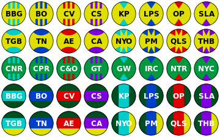
This image was produced by the following code:
fn new_context(width: i32, height: i32) -> (Context, ImageSurface) {
let surface = ImageSurface::create(Format::ARgb32, width, height)
.expect("Can't create surface");
let context =
Context::new(&surface).expect("Can't create cairo::Context");
(context, surface)
}
fn draw_tokens(output_dir: &output::Dir) -> Result {
let output_file = output_dir.join("draw_tokens.png");
let rows = 5;
let cols = 8;
let width = cols as f64 * 2.0 * TOKEN_RADIUS_MARGIN;
let height = rows as f64 * 2.0 * TOKEN_RADIUS_MARGIN;
let (ctx, surf) = new_context(width as i32, height as i32);
// Background colours for minor (yellow) and major (green) companies.
let bg_yellow = Colour::from((223, 223, 0));
let bg_green = Colour::from((0, 153, 63));
let bg_dark_green = Colour::from((0, 77, 31));
let bg_iter = std::iter::repeat(bg_yellow)
.take(16)
.chain(std::iter::repeat(bg_green).take(8))
.chain(std::iter::repeat(bg_dark_green).take(16));
// Foreground colours.
let aqua = Colour::from((0, 204, 204));
let blue = Colour::from((0, 63, 204));
let red = Colour::from((223, 0, 0));
let purple = Colour::from((127, 0, 223));
let fg_colours = vec![aqua, blue, red, purple];
let fg_count = fg_colours.len();
let fg_iter = fg_colours.into_iter().cycle();
// Define token styles and create tokens.
let tokens: Vec<Token> = bg_iter
.zip(fg_iter)
.enumerate()
.map(|(ix, (bg, fg))| {
// Use black text on yellow, and white text on green.
let text = if bg == bg_yellow {
Colour::BLACK
} else {
Colour::WHITE
};
// Cycle through token styles, repeating each style in turn so
// that it is paired with all of the foreground colours.
match ix / fg_count {
0 => TokenStyle::TopLines { bg, fg, text },
1 => TokenStyle::TopTriangles { bg, fg, text },
2 => TokenStyle::TopArcs { bg, fg, text },
3 => TokenStyle::TripleTriangles { bg, fg, text },
4 => TokenStyle::TopLines { bg, fg, text },
5 => TokenStyle::TopTriangles { bg, fg, text },
6 => TokenStyle::TribandH {
sides: bg,
middle: fg,
text,
},
7 => TokenStyle::TribandV {
sides: bg,
middle: fg,
text,
},
8 => TokenStyle::TricolourH {
top: bg,
middle: fg,
bottom: if bg == bg_yellow {
bg_green
} else {
bg_yellow
},
text,
},
_ => TokenStyle::TricolourV {
left: bg,
middle: fg,
right: if bg == bg_yellow { bg_green } else { bg_yellow },
text,
},
}
})
.map(Token::new)
.collect();
// Define the token names
let names = vec![
"BBG", "BO", "CV", "CS", "KP", "LPS", "OP", "SLA", "TGB", "TN", "AE",
"CA", "NYO", "PM", "QLS", "THB", "CNR", "CPR", "C&O", "GT", "GW",
"IRC", "NTR", "NYC",
// Repeat the first 16 names to demonstrate the banded styles.
"BBG", "BO", "CV", "CS", "KP", "LPS", "OP", "SLA", "TGB", "TN", "AE",
"CA", "NYO", "PM", "QLS", "THB",
];
let hex = Hex::new(HEX_DIAMETER);
let rotn = 0.0;
let mut tok_ix = 0;
for row in 0..rows {
for col in 0..cols {
// Define the token boundary.
let x = TOKEN_RADIUS_MARGIN * (1.0 + 2.0 * col as f64);
let y = TOKEN_RADIUS_MARGIN * (1.0 + 2.0 * row as f64);
ctx.new_path();
ctx.arc(x, y, TOKEN_RADIUS, 0.0, 2.0 * PI);
// Draw the token.
tokens[tok_ix].draw(&hex, &ctx, names[tok_ix], rotn);
tok_ix += 1;
}
}
let mut file = std::fs::File::create(output_file)
.expect("Couldn't create output PNG file");
surf.write_to_png(&mut file)
.expect("Couldn't write to output PNG file");
Ok(())
}
Identifying optimal routes
TODO: define the terms “path” and “route”.
We divide the process of identifying the optimal routes for a company to operate into the following steps:
-
Identify all routes available to the company;
-
Constructing routes from each placed token.
-
Paths as a sequence of
n18tile::Connectionvalues:Track,Dit,City,Face. -
The need to represent all of the track segments, in addition to mere connectivity between dits and cities.
-
Use of
Faceandn18map::Map::adjacent_faceso that we can divide connectivity into two concerns: within-tile connectivity as provided byn18tile::Tile::connections, and between-tile connectivity as provided byMap.
-
-
Joining routes together to form new routes.
-
Constraints on, e.g., the number of stops.
-
Can be extended to consider hex trains.
-
“Flood” trains (description) can also be handled, although this requires a depth-first search that records cities and dits, rather than paths. Pick one placed station and sum every revenue centre that can be reached with no path limit and the ability to reuse track segments.
-
-
Identify all valid combinations of available routes;
- No track segments in common.
-
Identify all valid pairings of trains to routes; and
- Number of stops, number of hexes, etc.
-
Identify the optimal pairing of trains to routes.
-
Express trains: where to stop?
-
Route bonuses.
-
We now describe each of these steps in turn.
TODO: include diagrams to illustrate each step. Show, e.g.,:
-
Multiple (conflicting and non-conflicting) routes starting from a single token;
-
Joining paths;
-
Path combinations;
-
Multiple routes along the same path due to different skips/stops.
-
Here is an example where the optimal routes for a pair of trains involves sub-optimal routes for each train:
Map Description 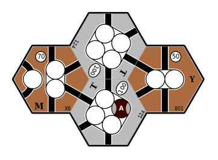 Four connected cities 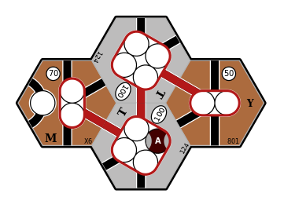 8-train: optimal revenue is $320 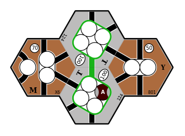 2+2-train: optimal revenue is $400 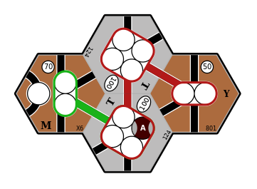 Both trains: optimal revenue is $590
Identifying all available routes
We assume that all routes operated by a company must pass through a city that contains one of the company’s token.
-
We first define the route limits, such as maximum number of stops, if any.
-
We then loop over all of the company’s placed tokens and, for each placed token, construct all valid paths that start at this token.
-
To allow for paths that pass through a placed token, we form new paths by joining pairs of paths that both start at the same placed token, subject to the following constraints:
-
The two paths being joined do not have any conflicts (i.e., they don’t have any elements in common except for the placed token); and
-
The combined path respects constraints on length, number of stops, etc.
-
-
To avoid duplicating paths that pass through more than one of the company’s placed tokens, we:
-
Define an ordering on token spaces across the entire map, by representing each token space as a
(HexAddress, usize)tuple, whereHexAddressimplementsOrdand theusizeelement is the index of the token space on its tile. -
When constructing paths that start at a placed token, we stop searching when another of the company’s placed tokens is reached and according to the
(HexAddress, usize)ordering this encountered token comes before (i.e., is less than) the starting token.
This ensures that any connection between two of the company’s placed tokens is only explored in a single (arbitrary, but consistent) direction.
Note that this is sufficient to identify all valid paths. Each valid path will reach (or pass through) at least one placed token and, of these tokens, one will be the “minimum” token according to the
(HexAddress, usize)ordering. This path will then be constructed by steps 2 and 3, above, when starting from this “minimum” token. -
-
If the company owns any trains that can skip over towns and/or cities, we consider paths of arbitrary length, with the restriction that any train that operates this route:
-
Must stop at the first and last revenue centres; and
-
May skip over revenue centres in the middle of the route.
Note that in this case, a single path represents multiple routes that traverse the same path, but where the train stops at a different subset of the available revenue centres.
-
Identifying all valid combinations of routes
We need to consider all \(k\)-combinations of routes where there is at least one route, but no more routes than the number of trains owned by the company. That is, for a company that owns \(T\) trains, we need to consider all \(k\)-combinations for each \(k: 1 \le k \le T \).
We also want to ignore any combination of routes where any of the routes conflict with each other (e.g., by using the same track segment). Note that by exploring all valid combinations, we ignore the order in which routes are combined.
This is implemented by n18route::comb::CombinationsFilter, which internally
iterates over all route combinations and skips over combinations where any of
the routes conflict with each other.
Identifying all valid pairings of trains to routes
We assume that the revenue earned from operating a route only depends on the
train type.
For example, if a company owns two 2 trains we do not need to consider the
order in which they are paired with routes, because the results will be
identical.
But for a given combination of routes — in which the routes will
necessarily be listed in a specific order — the order in which we
allocate train types to these routes matters.
For example, if there are two routes that visit exactly two cities and the
company owns a 2 train and a 2+2 train, the net revenue will be higher
if the 2+2 train operates the route that earns the greatest revenue.
So for a given (ordered) combination of \(R\) routes we need to explore all of the \(R\)-permutations of the company’s trains that are unique in their ordering of train types.
This is implemented by n18route::perm::KPermutationsFilter, which internally
iterates over all train k-permutations and skips over permutations that
don’t change the ordering of train types.
Identifying the optimal combination of routes
Once we have collected all of the possible paths for a company, we need to find the allocation of company trains to routes that yields the greatest revenue. There are a number of complications to consider:
-
For a given set of routes, the revenue may depend on how we allocate these routes to the company’s trains. For example, if there are two routes that visit exactly two cities and the company owns a
2train and a2+2train, the2+2train should run on the route that earns the greatest revenue. -
We need to consider operating fewer routes than the company has trains.
-
For express trains, we must consider routes of all possible lengths, and determine the combination of visiting and skipping cities along each route that earns the greatest revenue.
-
So for an express train that can make up to
Nstops, it must stop at the first and last stops on the path, and up toN - 2stops anywhere else along the path. -
Note that route bonuses may affect which of the
N - 2stops earn the most revenue, so we need to evaluate every combination of stopping at, or skipping over, each revenue centre (except for the first and last centres, where the train must stop).
-
-
Routes may earn bonus revenue from a variety of sources, such as:
-
By owning private companies that provide bonus revenue when visiting a specific location.
-
By visiting a specific combination of cities. For example, in 1867 the city of Timmins normally earns $40, but if the route also includes at least one of Toronto, Montréal, or Québec, its revenue is doubled ($80).
These bonuses are game-specific and context-dependent. The supported bonus types are defined by the
n18route::bonus::Bonusenum. -
TODO: haven’t described all steps of the algorithm ...
Performance
We will use the final operating round of the Bankruptcy Club’s recorded game of 1867 as an example, and consider the following three companies:
- Canadian Northern Railway (CNR), which has a 5-train and a 5+5E-train, and runs for $102 per share (link);
- Great Western Railway (GW), which has a 5-train and an 8-train, and runs for $76 per share (link); and
- Chesapeake and Ohio Railway (C&O), which has a 6-train and an 8-train, and runs for $89 per share (link, final decision).
For all three companies, the navig18xx crate allows us to find better routes that earn more revenue.
- Canadian Northern Railway can earn $113 per share, an increase of $11.
- Great Western Railway can earn $84 per share, an increase of $8.
- Chesapeake and Ohio Railway can earn $90 per share, an increase of $1.
Each company also serves as a good benchmark for measuring performance. They can operate tens of thousands of paths, and with 2 trains this results in hundreds of millions to billions of potential path combinations:
| Company | Number of paths | Number of path combinations |
|---|---|---|
| GW | 15,008 | 112,612,528 |
| C&O | 46,176 | 1,066,088,400 |
| CNR | 67,948 | 2,308,431,378 |
Profiling revealed that the overwhelming majority of time was being spent determining whether each combination of paths could be operated together (i.e., checking for route conflicts).
The following optimisations have been introduced:
- Record fewer conflicts:
- We do not need to record track segment conflicts, since every track segment connects to a hex face, and two track segments that connect to the same hex face are considered to share track.
- We only need to record one hex face conflict for each pair of adjacent hex faces.
- Sort conflicts: store route conflicts in sorted vectors, to minimise the number of comparisons required to identify whether two paths conflict.
- Parallel iterator: iterate over the huge numbers of path combinations in parallel using rayon.
- B-Trees: ensure deterministic results by using B-Trees instead of hashed data structures.
| GW | C&O | CNR | |
|---|---|---|---|
| Initial | 0:37 | 5:23 | 13:02 |
| Fewer conflicts | 0:22 | 4:08 | 9:35 |
| Sorted conflicts | 0:12 | 1:42 | 4:58 |
| Parallel iterator | 0:06 | 0:51 | 2:26 |
| B-Trees | 0:05 | 0:45 | 2:01 |
| Improvement: | 86% | 86% | 85% |
These times were obtained by running cargo test --release 1867_bc using Rust 1.48.0 on Debian Buster (Linux kernel 5.10.28) with 8 GB RAM and an Intel Core i7-5600U CPU (2 cores, 4 MB cache).
The times reported for the B-Trees optimisation were obtained using Rust 1.54.0 and Linux kernel 5.10.46, but these software updates did not change the times obtained for the Parallel iterator optimisation.
Profiling
The Rust Performance Book lists a number of different profilers.
I have used cargo-flamegraph and perf to profile navig18xx.
This allowed me to identify that when finding the optimal pairing of trains to routes (Trains::select_routes) the majority of time was being spent determining whether pairs of paths had any conflicts or could be operated together.
This analysis can be reproduced with the following steps:
-
Install the necessary packages; e.g., on Debian Linux:
sudo apt install linux-perf cargo install flamegraph -
Delete the cached routes for one company so that the
1867_bcexample will have to identify them again:rm ./examples/output/1867_bc_D.json -
Profile the
1867_bcexample and generate a flamegraph:cargo flamegraph --example 1867_bc --output flamegraph-1867_bc.svg
Note: this can generate many gigabytes of performance data, particularly if you delete the cached routes for more than one company.
Collecting profiling information
Note that you may need to temporarily decrease the value of perf_event_paranoid in order to collect profiling information.
You should then restore its original value.
echo 2 | sudo tee /proc/sys/kernel/perf_event_paranoid
cargo flamegraph --example 1867_bc --output flamegraph-1867_bc.svg
echo 3 | sudo tee /proc/sys/kernel/perf_event_paranoid
Improved output for release builds
If profiling a release build, you may want to ensure that full debugging information is collected so that the profiling output is easier to interpret.
To do this, either set the environment variable CARGO_PROFILE_RELEASE_DEBUG=true or temporarily add the following lines to Cargo.toml:
[profile.release]
debug = true
Determinism
By default, the Rust HashMap and HashSet types use a randomly-seeded hashing algorithm, which means that they cannot be relied upon to provide a consistent ordering.
While it is possible to override the hashing algorithm, a simpler alternative is to use the BTreeMap and BTreeSet types, which require that the key type has a well-defined ordering (i.e, it must implement the Ord trait).
This has resulted in a small, but consistent, increase in performance.
GTK user interface
The rusty_train program uses (synchronous) channels to pass messages to a single event-handler that owns and mutates the UI state (navig18xx::prelude::UI).
The map state is drawn on an off-screen image surface, and whenever the event-handler determines that the user interface needs to be redrawn, it copies the contents of this off-screen surface to the on-screen drawing area.
I had previously tried using a Rc<RefCell<UI>> value to share a single mutable UI, but this isn’t a great idea; message passing is a much nicer alternative.
I also tried drawing the updated map state to a recording surface and then copying this content to the on-screen drawing area, but this proved to be extremely slow. Switching from a recording surface to a plain image surface resolved this issue, because the recording surface records each operation at the most abstract level and then replays them one by one.
To-do list
This describes the development road-map.
Documentation to-do list
The documentation for each module needs to be fleshed out with introductory text and examples, and more detailed documentation for individual types and functions. See the Rust documentation guidelines for details.
Document public items
Identify public items that are missing documentation by running:
cargo clippy --all-targets -- -W missing_docs
For reference, see this list of allowed-by-default lints.
Architecture diagram
We currently generate a dependency graph:

But perhaps we can convey further details with an architecture diagram. For example, SQLite has a great architecture document that includes a very clear diagram.
Examples of crate documentation
The csv crate has excellent documentation, including a tutorial and a cookbook.
Hosting on docs.rs
See the docs.rs documentation for information about the documentation is generated.
Implementation details
This page collects implementation details that should be added, changed, removed, or fixed.
Invalid route-finding options
The route-finding algorithm assumes that routes can be constructed from one or more paths, where each path starts at a token T1 and never proceeds past a token T2 where T2 > T1, and we join pairs of paths that both start from the same token T and have no conflicts.
The path-building algorithm and route-finding algorithm both assume that a single path cannot pass through the same revenue centre more than once. Note that the path-building algorithm stops whenever it encounters any kind of connection (hex face, track segment, revenue centre) that it has already visited.
The search criteria (n18route::search::Criteria) cannot allow conflict_rule to be ConflictRule::TrackOnly (i.e., no track segment in common), because this would mean that a single route could visit the same revenue centre multiple times, if there are sufficient track connections.
-
So the implementation should panic, or return an
Errorvalue. -
Are there any games where this is a relevant concern? Note that this does not apply to “Flood” trains, which earn revenue from every revenue centre that can be reached from a single token (i.e., only requires a search from each matching token, and selecting the token that earns the most revenue).
See the n18route::search and n18route::train modules for the implementation.
Error handling
The current implementation generally avoids returning Result<T,E> values and instead panics when an error is encountered.
Many of these panics are triggered by Cairo errors, such as failing to create a surface or context, or failing to draw on a surface, for which there is no obvious mitigation and panicking is an acceptable solution.
- But other panics should be removed and
Result<T,E>values should be returned in their place.
Potential panics can be located with the following command:
grep --color=always -E '(\.unwrap|\.expect|panic!\()' -r crates/ tests/ examples/ src/
See this article about error handling in Rust, which frames error handling in terms of their purpose and location.
Relevant crates include anyhow, eyre, and thiserror.
Also see this /r/rust discussion about disallowing specific methods with clippy.
Builder patterns
Some of the more complex data structures would benefit from a builder to simplify their construction.
The preferred option is a non-consuming builder whose methods accept &mut self values and return &mut Self values.
I have implemented builders for some types (some consuming, some non-consuming), and have defined builder-like methods for other types (e.g., n18hex::theme::Text).
-
There are likely other types for which a builder would be useful.
-
Consuming builders should probably be converted into non-consuming builders.
Remove n18io crate
It is possible to use features to enable/disable (de)serialisation, which would remove the need for the n18io crate.
To include/exclude both serde and serde_json we need to define a single feature that enables/disables both crates:
[features]
load_save = ["serde", "serde_json"]
Note that optional dependencies implicitly define a feature of the same name as the dependency, and so explicit features cannot use the same name as a dependency.
- The
namespaced-featuresfeature would allow us to define aserdefeature than enables both crates; see the RFC and tracking issue for details.
But note that features and workspaces are not easily combined; see these issues — 1, 2, 3, 4 — for some perspective.
-
It would appear that each crate would need to define this
load_savefeature, and for thenavig18xxcrate this feature would enablecrate-name/load_savefor each of these crates. -
The
navig18xxcrate should have no features enabled by default (i.e., notload_saveorui). These features can be enabled in the rootCargo.tomlfile so that they’re available to therusty_trainbinary.
Use a single index for token spaces
Token spaces are currently indexed by revenue centre and by the token space number in that revenue centre.
Using a flat index 0..N instead (or in addition) could make other parts of the code simpler and easier to understand.
For example, this would make it much simpler to show all placed tokens on replacement tiles.
Separate combinations and permutations crates
- Consider splitting out the
n18route::combandn18route::permmodules into separate crates (e.g.,n18combandn18perm).
Export items in crate root
Maybe we should (re)export every public type or function from the crate root.
Planned features
Valid tile upgrades
Across most (all?) 18xx games there are three different rules for upgrading track:
- Permissive;
- Semi-Restrictive; and
- Restrictive.
We could define an UpgradeRule enum with three variants.
This would allow us to:
-
Identify candidate upgrade tiles (noting that candidates may not be valid for all possible tile rotations);
-
Validate the chosen tile and rotation; and
-
Place each token from the original tile in an appropriate token space.
NOTE: the valid candidates may depend on which company is performing the upgrade, so candidate selection and validation will both require passing a valid Token to identify the company.
Are there any situations where the Game itself should have some say in choosing candidates and/or validating the chosen replacement?
-
Given that some 18xx games include events that alter the map, such as the North-West Rebellion in 1882: Assiniboia, it is probably best to provide a default implementation (e.g., as a default method for
n18game::Game) and allow individual games to override this as required. -
Or should we require each game to define the valid upgrade tiles, and only provide a default implementation for validation? This method could look something like:
#![allow(unused)] fn main() { fn upgrades_for(&self, tile_name: &str) -> Option<Vec<&str>> } -
Games can then hard-code the upgrade options, and we only need to implement the validation logic and token placement for each of the
UpgradeRulevariants.
Representation
We would need to define a data structure that characterises the current tile’s topology and connections with respect to the company performing the upgrade.
UI states
The current ReplaceTile state should be separated into two states:
-
A
ReplaceTilestate that only handles replacements, not upgrades (i.e., ignores placed tokens and upgrade concerns); and -
An
UpgradeTilestate that describes the current tile’s properties (see above) and only accepts valid upgrades. Whenever the candidate tile is changed or rotated, the hex border colour could be used to indicate whether the current configuration is a valid upgrade.
Undo/redo
Any UI event-handler that modifies the map should return an Action or Command enum that knows how to make and revert this modification to the map.
The UI can then maintain a vector of past actions and an index to the current undo position, allowing the user to undo and redo these actions.
Performing an action other than undo or redo would clear the future actions, and append this new action to the past actions.
The Command pattern might be useful here.
Also see these two /r/rust discussions about implementing undo/redo, and the undo crate.
Port to GTK 4
The gtk-rs project have released a GTK 4 crate and an introductory book.
It may be as simple as using the gtk4 and gdk4 crates, and making a few changes to the rusty_train binary.
Note that GTK 4 is not yet packages for Debian stable, testing, or unstable. See Debian bug 992907 for progress.
18xx-maker JSON schema
See the 18xx-maker repository, specifically the src/data/tiles directory, for examples of tile definitions that are used to create game maps such as 1867.
Perhaps it would be possible to translate between the 18xx-maker data format and that of n18io.
UI navigation
Make, e.g., g open a text-entry widget and allow the user to enter a hex address to go to (i.e., make active).
Similarly, make / open a text-entry widget to select a replacement tile, allowing the user to filter matching tiles by typing their name or parts thereof.
Underlying this would be a modal window that accepts a slice of strings and allows the user to filter and select the desired option.
It seems that this might require using a TreeModelFilter to filter a TreeModel (such as ListStore, which appears sufficient), which is displayed using a TreeView widget.
The following references may be useful:
Rust and Cargo features
This page lists items related to Rust language features and Cargo workflows. It also collects feature requests and issues that would assist with this project.
Publishing to crates.io
See the Rust API Guidelines for a lengthy checklist of guidelines that should be considered before uploading this crate to the official crate registry.
We also need to specify both the path and the version for each crate in the workspace, because crates.io ignores path dependencies.
The cargo deb helper command automatically creates binary Debian packages from Cargo projects, and handles workspaces.
Rust version-related issues
See the “Minimum Supported Rust Version” tracking issue.
-
Rust 1.38 provides the duration_float feature.
-
Rust 1.48 provides intra-doc links.
-
Rust 1.51 allows running all test cases, and provides the “version 2” feature resolver that allows enabling/disabling features for all crates in the workspace.
-
Rust 1.53 provides the or_patterns feature, and is currently the minimum supported Rust version for the core
gtk-rscrates.
Workspace issues
- De-duplicate Cargo workspace information: tracking issue.
Documentation issues
-
Include crate examples in the generated documentation: issue
-
Include images in the generated documentation: issue
-
Define enabled and disabled lints in a configuration file: issue
-
Enable warnings for doctests: relevant issues and pull request.
Testing issues
-
Run all crate examples with a single command: issue
-
Support
--nocapturefor doc tests: issue -
Running
cargo test --all-targetsdoes not run doc tests: issue
Miscellaneous items
This page collects smaller to-do items for each crate, the test cases, and the examples.
n18io
Nothing.
n18map
-
n18map::descr::update_map: return aResult. -
n18map::descr117-119: wantMapto support placing tokens by name, similar to placing tiles? -
n18map::map:ParseHexAddressError, indicate in the returned error when we find an odd/even value instead of a required even/odd value. -
We may want to allow
Gameobjects to useMap::replace_tileto replace tiles that are not otherwise replaceable. -
Modify
Map::prev_col,Map::next_col,Map::prev_row, andMap::next_rowto either-
Return
Option<HexAddress>values and returnNoneif the previous/next address isn’t a valid hex; or -
Keep decreasing/increasing the column/row number until a valid address is found.
-
-
Make
HexAddresssupport more than 26 columns when converting to/from string coordinates.
n18route
-
n18route::builder: note in the doc strings that the “to_“ prefix is not a type conversion; these connectivity functions. -
n18route::comb: odd that splitting at not-half-way gives worse performance:#![allow(unused)] fn main() { // let range = (self.ix0_max - self.current_ix) as f64; // let denom = 2.0_f64.powf(1.0 / self.max_len as f64); // let delta = (range / denom).round() as usize; // let split_at = self.current_ix + delta; } -
n18route::path::Path:- add an
append(other: Path)method toPath?
- add an
-
n18route::path: distinguish betweenPath(which defines track segments, hex faces, and cities that a train passes through) andRoute(which defines the visits that the train makes). -
n18route::search:-
use
rayonto iterate overconnections.iter()in parallel? -
use
rayonto iterate overpaths.iter().enumerate()in parallel? -
depth_first_search(): should we allow starting at a dit? If not, store the starting city_ix in the context? -
Adjacent red hexes are considered the same location and cannot be visited multiple times, so we should probably have adjacent red tiles contain a single city with track that connects to all of the other adjacent red tiles ... or have
Tiledefine this instead (e.g.,tile.is_offboard())?Further on,
let off_board = tile_colour = ..., shouldTiledefine this instead? -
n18route::search::tests: also modify the map so thatpaths_fromandpaths_throughreturn different revenues, and we can check that they’re each correct.
-
n18tile
-
n18tile::city: renameTokenstoTokenSpacesor something similar. -
n18tile::city:City::translate_coords()uses custom adjustments forHexPosition::FaceandHexPosition::Corner, andCity::delta_coords()duplicates some ofHexPosition::to_coord().- Remove the custom position adjustments?
- Define
Delta::coord(hex: &Hex, from: Coord) -> Coordand use this inHexPosition::to_coord()andCity::translate_coords()?
-
Replace the
boolfield inn18tile::label::PhaseRevenueandn18tile::label::PhaseRevenueVertwith a new enum type that has variantsNormalandEmphasise? -
n18tile::tile::Tile:- Break out the layer calculations into a separate struct, similar to
connection::Connections? - Expose functions for drawing layers for integration tests?
pub fn tracks_in_layer(&self, layer) -> ?Vec?pub fn cities_in_layer(&self, layer) -> ?Vec?
- Mark track segments on red (and blue) tiles as terminal?
- Involves adding a
pub terminal: boolfield toTrack, with a default value offalse, and adding a methodmark_as_terminal()
- Involves adding a
- Break out the layer calculations into a separate struct, similar to
-
n18tile::track::Track: define a privatedit_direction(&self, hex: &Hex) -> Option<Coord>method?-
The
Tracktype really needs an internaldit_coord()method, it would replace a lot of duplicated code. -
Verify that
Track::dit_coord()actually agrees with the dit location! -
Make
track::CoordsuseTrack::get_coord()for iteration, so that there’s only one piece of code that calculates track coordinates.
-
n18token
-
n18token:Token: it would be nice if each token owned its name, but then Token cannot implement Copy ...- This should be in the type and/or module documentation.
-
n18token:Tokens: implementIntoIteratorforItem = (String, Token)... be we need to specify the exactIteratortype, so we’d have to make our own struct that implementsIterator.
n18ui
- Add a new state that draws all of the track segments, etc, on off-board tiles, rather than only drawing the track segments on the off-board tile faces.
Rather than adding a new flag to
Tile, add a newTilemethod that draws the tile and ignores the off-board special case, and add a newn18brush::draw_tiles()equivalent that calls thisTilemethod.
Test cases
-
tests/connection_bonus: also try requiring only one of the skipped dits, adding to_any options that are/are not on the path, including Toronto and Montreal, and so on. -
n18catalogue: test tile connections for most (all?) predefined tiles. -
n18hex,n18tile,n18map: write tests cases for coordinates, tile layout, and map connectivity forOrientation::PointedTop.
n18game
Learn from the experience of implementing 1861 and 1867 and provide a variety of helper methods for implementing other games.
Consider dividing n18game into sub-modules:
-
tiles(catalogue)- Provide a TileBuilder type
.track(&mut self, Track).tracks(&mut self, IntoIterator<Item=Track>).city(&mut self, City).cities(&mut self, IntoIterator<Item=City>).onboard_faces(&mut self, IntoIterator<Item=HexFace>).build(&hex, colour, name: IntoString)
- Collect key game information in a single place
- i.e., special tiles AND their locations / initial_state.
- Provide a TileBuilder type
-
addrs(define hex addresses and constants for each city)- Make each town and city’s location a
static constvalue? - Simplify defining the full range of map hexes
- Allow
[A-Z]+[0-9]+but must also support negative rows and columns.
- Allow
- Make each town and city’s location a
-
map(initial state, phases) -
tokensand/orcompany- May want to have tokens that are not part of a company for, e.g., national railways.
n18catalogue
- Should
Kind::build()also take an18hex::Orientationargument, so that the positioning of tile elements (such as labels) can depend on the hex orientation?
About this book
This book is written in Markdown and is generated by mdBook.
Included figures and code blocks are generated by crate examples, which are
located in the examples/ directory of this repository.
Running the test suite with cargo test --examples will compile each of these
examples and run any #[test] functions that they contain.
This will update the book figures.
Note that each of these examples must set the test field to true in
Cargo.toml:
[[example]]
name = "example_name"
test = true
When run as a test case, the 1867_bc example will calculate the optimal routes for each company, and this can take several minutes.
Run this as an example (cargo run --example 1867_bc) to use cached routes and generate the output figures very quickly.